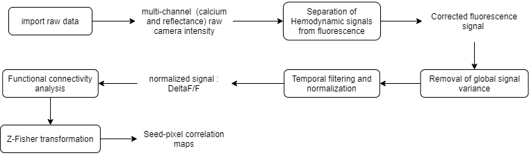

Here, we describe the steps to preprocess calcium imaging data to generate functional connectivity maps of a mouse cortex. In this example, you will learn:
The raw data used here consists of ~5 min multi-channel (fluorescence and reflectance) recordings of an awake mouse expressing GCaMP6 calcium indicator in cortical neurons. Here is the analysis workflow that we will create and apply to this data:
Functional connectivity pipeline workflow

First, open the main GUI by typing Matlab's command window:
umIToolbox;